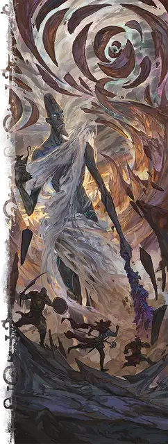

Отпрыск Скорауса
Scion of Skoraeus
Громадный Великан (Титан), обычно нейтральный

Класс Доспеха 19 (природный доспех)
Хиты 444 (24к20 + 192)
Скорость 60 футов
| мод | спас | ||
|---|---|---|---|
| СИЛ | 29 | +9 | +9 |
| ЛОВ | 20 | +5 | +12 |
| ТЕЛ | 26 | +8 | +8 |
| мод | спас | ||
|---|---|---|---|
| ИНТ | 19 | +4 | +4 |
| МДР | 24 | +7 | +14 |
| ХАР | 14 | +2 | +2 |
Навыки Акробатика +12, Выступление +14
Сопротивление урону огонь, холод, электричество; дробящий, колющий, рубящий от немагических атак
Иммунитет к урону кислота
Иммунитет к состояниям испуг, окаменение, очарование, паралич
Чувства истинное зрение 120 футов, пассивное Восприятие 24
Языки Великаний, Первичный
Опасность 23 (50000 опыта)
Бонус мастерства +7
Особенности
Легендарное сопротивление (6/день). Если отпрыск проваливает спасбросок, он может вместо этого сделать спасбросок успешным.
Сопротивление магии. Отпрыск совершает с преимуществом спасброски от заклинаний и прочих магических эффектов.
Осадный монстр. Отпрыск наносит двойной урон объектам и сооружениям.
Действия
Мультиатака. Отпрыск совершает одну атаку Кристальной дубиной и две атаки Размашистым ударом, затем использует Заточающую хватку, если она доступен. В качестве альтернативы, отпрыск совершает две атаки Рунным валуном.
Кристальная дубина. . Рукопашная атака оружием: + 16 к попаданию, досягаемость 30 футов, одна цель. Попадание: 35 (4к12 + 9) дробящего урона. Попадание или промах: Отпрыск может заставить дубину вспыхнуть ярким светом, и цель должна преуспеть в спасброске Телосложения Сл 22, или получит 18 (4к8) урона излучением и станет ослеплённой до начала следующего хода отпрыска.
Размашистый удар. . Рукопашная атака оружием: + 16 к попаданию, досягаемость 20 футов, одна цель. Попадание: 31 (4к10 + 9) урона силовым полем.
Рунный валун. . Дальнобойная атака оружием: +16 к попаданию, дистанция 120/480 футов, одна цель. Попадание: 27 (4к8 + 8) дробящего урона. Попадание или промах: Валун взрывается. Цель и каждое существо в пределах 30 футов от неё должны совершить спасбросок Ловкости Сл 22. В случае провала существо получает 19 (3к12) урона силовым полем и падает ничком. В случае успеха существо получает только половину этого урона.
Заточающая хватка (перезарядка 6). Отпрыск окутывает свою руку магией окаменения и касается одного существа Огромного размера или меньше, которое он может видеть в пределах 20 футов от себя. Цель должна преуспеть в спасброске Ловкости Сл 24, иначе получит 28 (8к6) урона силовым полем и становится схваченным (Сл высвобождения 19). В начале следующего хода отпрыска, если цель все еще схвачена, она становится окаменевшей.
Бонусные действия
Перемещение, сотрясающее землю. Отпрыск перемещается вплоть до своей скорости, после чего распространяет ударную волну через землю 60-футовой сферой с центром на себе. Каждое существо на земле в этой области, которое концентрируется, должно преуспеть в спасброске Телосложения Сл 24, иначе потеряет концентрацию.
Местные эффекты
Область, окружающая отпрыска Скорауса, изменяется под действием магии великана, создавая один или несколько из следующих эффектов:
• Изобилие камней и минералов. Гладкие камни и самоцветы разрастаются в радиусе 6 миль от отпрыска.
• Съедобный мох. Ковры золотистого мха, который каменные великаны находят вкусным, растут на стенах пещер в пределах 6 миль от отпрыска.
• Наделенные силой каменные великаны. Каменные великаны находящиеся в пределах 1000 футов от отпрыска получают бонус +7 к броскам атаки и урона.
Если отпрыск умирает, эффект Наделенные силой каменные великаны мгновенно прекращается. Остальные эффекты прекращают создавать новый мох и минералы, а существующий мох погибает в течение 1к10 дней.
Описание
Однажды мы с Дианкастрой исследовали глубокое подземелье, и вдруг в стене пещеры открылся глаз, и громогласный голос произнес: “Тетя Ди, это ты?” Я почти... ну, скажем так, что я был потрясён.
- Бигби
Не забывай, кто я такая, дорогой Бигби.
- Дианкастра
Великаны происходят от Всеотца Аннама и его детей. Но отпрыски богов великанов могут похвастаться большими претензиями: они внуки Аннама и занимают привилегированное место среди великанов. В некоторых мирах эти отпрыски правили первыми империями великанов, пока Аннам не удалился в уединение. В других мирах отпрыски охраняют места своего рождения (которые богаты магией стихий) или удерживают субстанцию мира вместе.
Отпрыски богов великанов - невероятно могущественные существа, которые наполняют окружающий мир первобытной магией. Во многих мирах они дремлют и стали частью ландшафта. В этом случае каждый отпрыск заключен в стазис внутри могущественного элементаля, называемого колыбелью. Колыбель защищает спящего отпрыска и следует его подсознательным желаниям, в том числе отгоняя незваных гостей. Но если колыбель погибает, отпрыск внутри полностью пробуждается.
Каменный ОТПРЫСК
Отпрыск Скорауса обычно дремлет глубоко в сердце возвышающейся горы, почти сливаясь с землей. Пока отпрыск спит, горные минералы превращаются в изящные резные камни и блестящие самоцветы.
Если шахтер прокладывает туннель слишком близко к сердцу горы, колыбель просыпается в виде двуногой массы камня и кристаллов. Она обрушивает тяжесть горы на голову нарушителя и издает оглушительный рёв, способный обрушить шахтные туннели.
Если колыбель разрушена, отпрыск Скорауса внутри нее пробуждается. Достигая почти 70 футов в высоту, он возвышается над большинством других существ и использует массу кристаллов в качестве дубинки. Однажды пробудившись, отпрыск продолжает заниматься искусством, которое украшало его сны, стремясь придать камню прекрасную элегантность. Если ему понадобится больше сырья, отпрыск может превратить живое существо на своей ладони в камень.